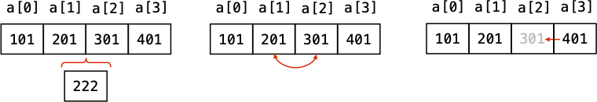

9 リスト構造
9.1 前回演習の解答
- 再帰アルゴリズム
9.2 本日のメニュー
- リスト構造
9.3 リストの基本
順序をもつ一連のデータを保存したいとき，配列を用いる方法は既に学習した．しかし，配列では実現が難しい操作がある:
- 配列の途中にデータを挿入する
- 順序を入れ替える
- 要素を取り出して配列から削除する
これらの操作は単独の配列では実装が難しい． データ保存用と，順序情報の保存用の2本の配列を用いることで実現は可能であるが，未使用領域の管理が煩雑で非効率的という欠点がある．

そこで，データに加えて前後のデータの保存場所をひとまとめにしておき，順にデータをたどることができるリスト構造を用いる． C言語でこれを実現するには，データと前後のデータへのポインタをメンバにもつ構造体を定義するとよい．
まずは，一方向にのみデータをたどることができる単方向リストを考えよう． 学生のテストの点数を保存するリストを作る．学生の名前と点数，次の学生のデータへのポインタをメンバにもつ構造体を定義しよう．
struct student {
char name[64]; // 学生の名前
int score; // テストの点数
struct student *next; // 次の学生データへのポインタ
};
typedef struct student Student;これからstruct studentをたくさん使うので，いちいち書くのが面倒である．そこで，6行目のtypedef宣言で，struct studentを新しくStudentという名前の型として使用することを宣言している．型名の先頭を大文字にするのは，独自に定義した型であることをわかりやすくするための慣例であって文法上必須ではない．
9.4 データの追加
早速3人分のデータを保存してみよう．
| 名前 | 点数 |
|---|---|
| Alice | 100 |
| Bob | 62 |
| Dave | 80 |
構造体の要素を
のように一つずつ宣言してポインタでつないでもよいが，リストの先頭からたどることができれば目的は達成なので，個別に変数名を付ける必要はない． そこで，malloc関数を使ってメモリ領域を確保し，その領域へのポインタをリストの前のデータに保存するようにする．
#include <stdio.h>
#include <stdlib.h> // mallocのために必要
#include <string.h> // strcpyのために必要
// Student の定義は省略
int main(void) {
Student *head = NULL; // リストの先頭へのポインタ．とりあえず空で宣言
// 最初の要素を定義
head = (Student *)malloc(sizeof(Student));
strcpy(head->name, "Alice");
head->score = 100;
// 2番目の要素を定義
head->next = (Student *)malloc(sizeof(Student));
strcpy(head->next->name, "Bob");
head->next->score = 62;
// ...
// 後略
}10行目のmalloc(sizeof(Student))はStudent型の分だけメモリ領域を確保する動作を意味する．mallocの戻り値はvoid*型なので，それをStudent*にキャストするために(Student *)が付いている． なお，キャストはしなくても動作する．
11, 12行目の->は構造体へのポインタからメンバにアクセスするための演算子であった（cf. 第7週）． つまり，11, 12行目でリストの最初の要素にAliceのデータを保存できている．
2番目のデータは，15行目でメモリ領域が確保され，16, 17行目でデータが格納されている．
これを続けていくと，->がとんでもない長さになりそうである．そこで，リストに要素を追加する関数add_studentを定義する．
#include <stdio.h>
#include <stdlib.h>
#include <string.h>
// Student の定義は省略
// リストの末尾に新たなStudent要素を追加して返す関数
Student *add_student(Student *head, char name[], int score) {
Student *new = (Student *)malloc(sizeof(Student)); // 新規要素のメモリ確保
strcpy(new->name, name);
new->score = score;
new->next = NULL; // 末尾に追加するので次のデータはNULL
if (head == NULL) { // 既存のリストが空なら
return new; // 新規要素を先頭として返す
} else { // 既存リストが空でない場合
Student *p = head; // リストをたどるためのポインタ
while (p->next != NULL) { // リストの先頭から末尾までたどる
p = p->next;
}
p->next = new; // 末尾に新規要素を追加
return head;
}
}
// リスト要素のメモリをすべて解放する関数
void free_list(Student *head) {
Student *p = head; // リストをたどる作業用ポインタ
while (p != NULL) {
Student *nx = p->next; // 次の要素へのポインタを別に保存しておく
free(p); // メモリを解法
p = nx; // 次の要素へ進む
}
}
int main(void) {
Student *head = NULL; // リストの先頭へのポインタ．とりあえず空で宣言
head = add_student(head, "Alice", 100);
head = add_student(head, "Bob", 62);
head = add_student(head, "Dave", 80);
free_list(head);
return 0;
}8–24行目の関数add_studentは，リストの先頭へのポインタと，追加する新規要素のデータを引数にして，末尾にその要素を追加したリストの先頭ポインタを返す関数である． ここで，戻り値としてリスト先頭へのポインタheadを返すのは，先頭のアドレスがadd_student内で変更された場合に，そのアドレスを呼び出し元に返す必要があるため． 9–12行目では追加する要素の実体を作成している． 14–23行目は，追加した要素を渡されたリストの末尾に追加する作業を行っている．
この関数を使うと，3人分のデータをもつリストの作成は37–40行目のようにコンパクトに書くことができる．
順番が前後したが，27–34行目で定義されるfree_list関数は，リストの要素を定義するために確保されたメモリ領域を解放する関数である．C言語では，プログラム実行中にmallocで動的に確保されたメモリ領域は自動で解放されず，キープされたままになる（OSがどうにかする場合もある）．これが重なると，メモリ領域を使用し尽くしてしまうので，mallocで確保した領域は，不要になった段階でfreeで解放する．
9.5 データの削除
リストからデータを削除する操作を実装しよう． 上記で作成した3人のテスト点数データから，名前をキーとして要素を指定し，一致するデータを削除する．削除後もリスト構造が保持されるようにしなければならない．つまり，削除する前の要素のnextポインタを，削除する次の要素へ付け替える操作が必要である． これを実現するために，ポインタ変数として，削除対象の要素を指すものとその前の要素を指すものの2つを用意する． リストの先頭が削除対象となる場合には，リストの先頭を表すポインタを書き換えるため，例外処理が必要である．
#include <stdio.h>
#include <stdlib.h>
#include <string.h>
typedef struct student Student; // 略
// リストの末尾に新たなStudent要素を追加して返す関数
Student *add_student(Student *head, char name[], int score); // 略
// リスト要素のメモリをすべて解放する関数
void free_list(Student *head); // 略
// リストの中身を出力する関数
void print_list(Student *head); // 略
// 名前で指定した学生のデータを削除する関数
Student *delete_student(Student *head, char target_name[]) {
Student *prev = NULL;
Student *current = head;
while (current != NULL) { // リスト末尾まで順に調べるループ
if (strcmp(current->name, target_name) == 0) { // 削除対象が見つかった
if (prev == NULL) { // 先頭要素を削除する場合
head = current->next; // head = 2番目要素へのポインタ
} else { // 2番目以降の要素を削除する場合
prev->next = current->next; // currentを抜いてリストをつなげる
}
free(current); // 削除対象のメモリ解放
}
prev = current; // 次の要素へ
current = current->next; // 次の要素へ
}
return head;
}
int main(void) {
Student *head = NULL; // リストの先頭へのポインタ．とりあえず空で宣言
head = add_student(head, "Alice", 100);
head = add_student(head, "Bob", 62);
head = add_student(head, "Dave", 80);
printf("----削除前----\n");
print_list(head);
head = delete_student(head, "Bob");
printf("----削除後----\n");
print_list(head);
free_list(head);
return 0;
}13–29行目が削除を行う関数である．17行目では，文字列の比較にstrcmp関数を使っている．単純に==で文字列配列の比較ができないことは，第5週で学んだ．
9.6 双方向リスト
要素を順方向にも逆方向にもたどれる双方向リストを実現するには，リストを構成する構造体に前後両方のデータへのポインタを含める． 構造体の宣言を以下のように修正すればよい．
9.7 演習
9.7.1 問題1
テストの点数データの単方向について，リストの指定した番号に新規データを挿入する関数を作成せよ．指定した番号がリストの長さを超える場合は，リストの末尾に追加するとする． 挿入関数の戻り値と引数の型は以下のとおりとする．
作成した関数を用いて，データ（Carol, 55点）を3番目（Bobの後）に挿入せよ． また，データ(Edward, 99点)を100番目を指定して（結果的にリストの末尾に）挿入せよ． ファイル名をins_list1.cとする．
9.7.2 問題2
問題1と同様の仕様で双方向リストに対応した関数を作成せよ． 同じくデータ（Carol, 55点）を3番目に，データ(Edward, 99点)を100番目を指定して（結果的にリストの末尾に）挿入し，リストの中身を順方向と逆方向に出力して編集結果を確認せよ． ファイル名をins_list2.cとする．